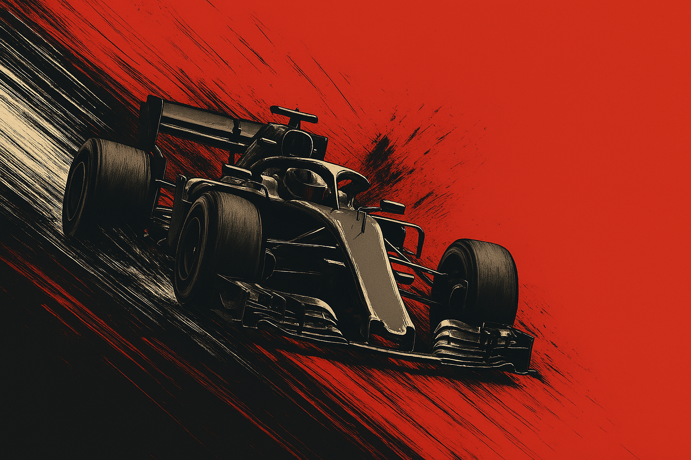
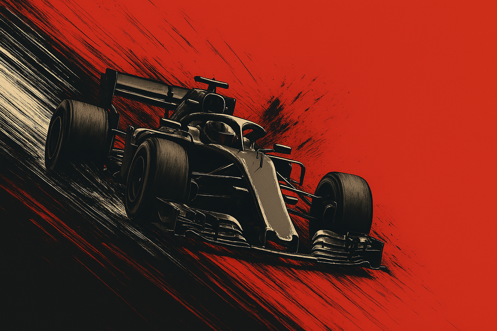

LOS MOTORISTAS DE FORMULA 1 son los responsables de diseñar y suministrar las unidades de potencia que impulsan los monoplazas.
Estas combinan motor de combustión y sistemas híbridos, y su rendimiento es clave para la velocidad, la eficiencia y la fiabilidad del coche.
Colaboran estrechamente con los equipos para asegurar una integración perfecta con el chasis y adaptarse a cada circuito.
Su papel es fundamental tanto en el desarrollo técnico como en la competitividad general.
Motoristas como Mercedes, Ferrari, Honda y Renault no solo impulsan a sus propios equipos, sino que también marcan el rendimiento de varias escuderías cliente en la parrilla.
 
